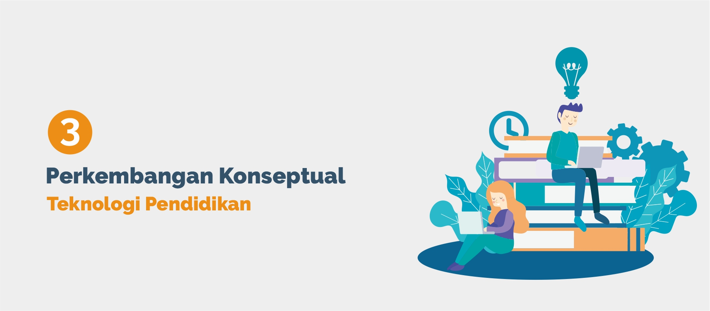

PENDAHULUAN
Konsep teknologi pendidikan akan selalu tumbuh dan berkembang sesuai dengan perubahan zaman dan tuntutan kebutuhan. Tumbuh dan berkembangnya suatu konsep tidak akan terlepas dari konteks dimana konsep itu dapat tumbuh, serta apa dan bagaimana awal perkembangan konsep itu sendiri. Konsep teknologi pendidikan tidak akan pernah terlepas dari pendidikan dan peserta didik, prosedur ide dan peralatan yang menyangkut semua aspek belajar manusia. Maka dari itu, mahasiswa teknologi pendidikan perlu memiliki pemahaman yang benar terkait perkembangan konseptual teknologi pendidikan yang dimulai dari konsep pendidikan, perkembangan teknologi, dan perkembangan awal teknologi pendidikan itu sendiri.